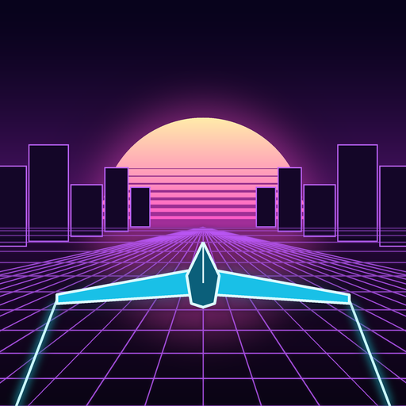

Lumaglide
Glide the neon canyon. A free game for iPhone by NeonMX.
Fly a glowing glider down an endless neon canyon at sunset. Drag anywhere to swoop up, down and side to side, slip through the glowing gates, grab gems and hit boost rings. Unlock eight gliders, or design your own.
Help
- The "Watch ad" buttons are greyed out
- They light up when an ad is ready to play. That needs an internet connection, and sometimes there's simply no ad available for a while. Everything else in the game works as normal.
- Where is my progress saved?
- On your iPhone. Lumaglide has no accounts, so deleting the app also deletes your gems, gliders and best distance.
- How do I change my tracking choice?
- Open your iPhone's Settings, then Privacy & Security, then Tracking, and switch Lumaglide on or off. The game plays the same either way, and ads are always family-friendly.
- How do I change my ad consent (UK and EU)?
- Tap Ad privacy at the bottom of the Lumaglide menu.
- Does Lumaglide have in-app purchases?
- No. It's free, and optional ads give bonus gems, a revive, or help unlock gliders.
Contact
Questions, problems or ideas: saroj.jena@gmail.com
Privacy
Lumaglide doesn't ask for your name, email or any account. Ads are provided by Google AdMob. Read the full privacy policy.